The answer is, you can't tell; at least not without knowing exactly how much Wimpy is willing to pay next Tuesday for that "six-dollar burger" today, and, of course, how likely you are to collect.
Although we laugh at the Wimpy character, his offer is really the basis for most commerce in the world today, and many computer programs are devoted to figuring out exactly how much that burger is worth. We call this concept "the time value of money".
Although Java has a host of different mathematical and
String functions, it's doesn't have any
functions dedicated to providing answers to questions like
this (like Excel does). If you want those answers, you'll
need to build those functions yourself.
That's what you'll learn how to do in this lesson.
- We'll start by building a simple loan calculator, where you can enter the principle, (the hamburger's "list price"), the term, (exactly which Tuesday are we talking about), and the interest rate, (the rent, given the variables of risk and return).
- Then, we'll turn that calculation into a procedure and pass each of these values as parameters.
- Then, you'll learn how to turn that procedure into a
reusable function, just like the functions in the
Mathclass.
That's the plan; let's get started with our calculator.
Introduction to Finance
Suppose I lend you a thousand dollars today, on your promise to pay me back in a year. I first consider my options. With my thousand I could:
- put it in the bank and get back thirty-five extra dollars at the end of the year.
- buy some shares of Google stock and hope that I can sell it for more than I paid for it at the end of the year.
- lend it to my brother-in-law who has a great invention, which he's sure will pay me back two thousand dollars after the year.
- lend it to you.
If I put it in the bank, baring revolution, I'm sure to get my interest back. If I lend it to my brother-in-law, I may get my two thousand back, but it would be a miracle.
Investing in Google and lending the money to you both probably fall somewhere in between those two extremes. Because there's a little more risk, I'd expect to make a little more money if things to well, so I'd lend you the money for, say 20%, or $200 for the year.
Simple Interest
This is called simple interest because it is,
well, simple. Here's a program that calculates
the amount you'll need to repay:
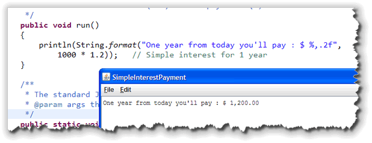
With simple interest, when the year's up, you write me a check for $1,200, and everybody's happy.My wife, though, doesn't like the deal. "Make him pay you back a little bit each month", she says. "That way, if he loses his job, we won't lose the entire thousand as well as the interest."
Now, the question is, how much should you pay me back each month? When you first look at the problem, it looks simple. 20% interest on a thousand dollars is $200, for a total of $1,200, so the monthly payments should be $100, right?
Well, I'm perfectly willing to lend money on those terms, but I certainly wouldn't be the borrower. That's because in the simple interest example, you got to keep my thousand for the entire year. In the revised example, you only get to keep part of the my money for the entire year.
Monthly Payments
So, how do you calculate the payments? Like this:
- For the first month, you kept my entire thousand, so you should pay me one month's interest on the whole thing. Now one month's interest is 20% / 12 * $1,000 or $16.67. The remaining $83.33 is just returning me part of the money that I lent you.
- In the second month, you only have $916.67 of my money, so you shouldn't have to pay as much interest. Instead of $16.67 you only have to pay $15.28, and the rest goes to pay me back a little more on my original thousand.
If you keep this up, you'll see that you end up paying me back all of my money way before the entire year is up. Of course, you don't want to do that! You'd rather pay me back less money each month, so the payments come out even. How do we calculate what those payments should be?
Rather than going back and forth, lowering the payments,
and then increasing them, until you come out with the
right amount at the end, you can use a calculation,
like the one shown here, from a finance textbook:
 In this case:
In this case:
- c stands for the monthly (or period) interest rate.
- n stands for the number of months or payments.
I don't really recommend the names n and c
for your programs. I've used them here only because those were the names
used in the financial function that I copied from the textbook.
We can put this into a program, along with some variables to make the
program interactive, and end up with a useful loan calculator:
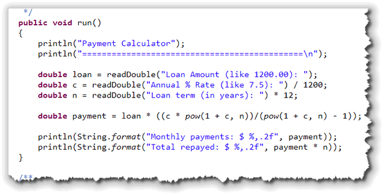
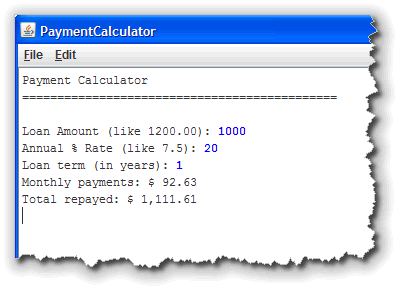
Notice that instead of paying me back $100 a month, your actual payments are only $92.63.
Here are some program notes:
- The program asks the user for the loan amount, annual interest rate,
and term of the loan in years. These are stored in
doublevariables. - For the interest rate, the user's input is divided by 1200 because we need the monthly interest rate in the formula. If you wanted to print the annual rate as part of the message to the user, you might want to do this calculation separately and store that in another variable.
- Similarly, the term in years input by the user is multiplied
by 12 to store the number of monthly periods in the variable
n, which is what the formula requires. - The
Math.powfunction is used to calculate the payment, using the formula from the textbook. (There are other formulas you can use as well.) Because I added the lineimport static java.lang.Math.*;to the top of my program, I don't have to prefix each use of thepow()function with the name of theMathclass. - Finally, the program prints out the value for the monthly payment as well as the total future (total) value of all the the payments.
Procedures and Parameters
Instead of writing a stand-alone program that gets the user's input, calculates the payment, and then prints the results, it would be more useful to put your code into procedures that could be reused whenever you wanted.
Here's a first attempt, that simply moves the calculation
and the printing into a procedure named printLoanData(),
just like you did in the last unit, when you studied procedural
decomposition:
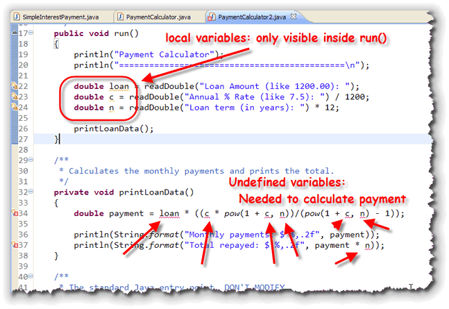
As you can see, the variablesloan, c and
n are local to the run() method. When
you define a variable inside a procedure, you can only use that
variable inside the same procedure, not inside another
procedure like printLoanData().
Parameters and Arguments
Most procedures and functions require additional input information
to carry out their work. A method that computes square roots, for instance,
requires the number to operate on. The printLoanData()
procedure shown here, requires the loan amount, the monthly rate and
the term of the loan before it can calculate the payments.
Fortunately, it is very easy to do this by writing your procedures and functions so that they accept parameters, and then passing different values when you actually call the procedure.
Actual Parameters
There are actually two kinds of parameters used when you write computer programs: formal parameters, and actual parameters.
A formal parameter is simply a local variable, specifically designed to transfer information from one method to another. Actual parameters are values you supply when you call the method. When you call the method, the actual parameters are used to initialize the formal parameters.
Let's see how that works in our case by passing the loan amount,
annual rate and term in years as actual parameters when we
call the printLoanData() procedure:
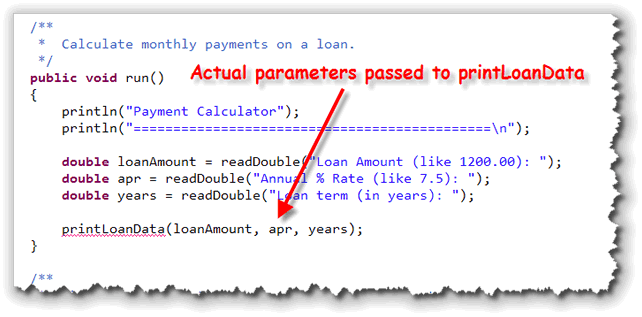
Notice that I have:- Changed the names of each of the variables to make the program clearer.
- Called the
readDouble()input function to accept the user's input and store it in my three variables. - Skipped the calculations previously used to turn rate into a monthly rate and years into months. I'll make those adjustments when I calculate the payment inside the procedure.
- Passed each of the three variables to
printLoanData()by placing them in the parameter list which, up until now, we've left empty.
Note also that Eclipse still underlines the word printLoanData(),
because when I defined the procedure, I didn't define any
formal parameters to match the actual parameters that I've passed
when calling the procedure.
Formal Parameters
As I mentioned in the previous section, A formal parameter is simply a local variable, specifically designed to transfer information from one method to another. A regular local variable, for instance, is declared like this:
public void someMethod()
{
int myLocalVar = 32;
}
As you remember, a variable declaration creates
a "bucket" where you can store a value—in this case,
myLocalVar is an int-sized
bucket that can hold an int value. The
actual value, 32 is stored in the "bucket" when
it is initialized; however, the initialization must happen
inside the method—there is no way to initialize the
local variable from outside.
A formal parameter works exactly like this local variable except:
- A formal parameter is declared inside the parameter list—that is, inside the parentheses following the method name—and not inside the method body.
- Each formal parameter declaration must include both the
type of the variable and a name. Remember that you can
use a single type along with several names when
declaring regular local variables, like this:
int a, b, c;
This kind of syntax is not legal when declaring paramters; each formal parameter must have both a name and a type. - A formal parameter is initialized by calling the method, not by using the assignment operator.
To change the definition of printLoanData()
to add the three formal parameters that are needed, you would
write something like this:
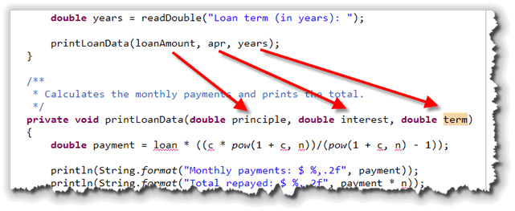
Notice that each formal parameter is a complete variable declaration with its own type and name. Note also that the names I've used for the formal parameters here, are not the same as the names of the actual parameters I've used when calling the procedure. (They could be the same name, but I've used different names to highlight the fact that these are different variables. To initialize the formal parameters principle,
interest and term, you pass different
values as actual parameters. Actual parameters, you remember,
are values you supply when you call the procedure. When
you call printLoanData(), the values stored in the
variables loanAmount, apr and years
in the run() method are used to initialize the
formal parameters in printLoanData(), exactly as if
the procedure started with this line:
public void printLoanData()
{
double principle = loanAmount;
double interest = apr;
double term = years;
When you create a local variable and initialize it inside
a procedure, the local variable (like the example myLocalVar
shown earlier) has the same value (32) every time that
the procedure is called. In contrast, the formal parameters
principle, interest and term
may have different values each time printLoanData()
is called. This means that by calling a procedure using different
actual parameters, you can customize the
way that the method behaves.
Finishing printLoanData()
Of course, as you can see from the picture, Eclipse reports that
printLoanData() still has errors! That's because
the names of the formal parameters, and the names of the variables
used in the actual calculations are different.
To fix this, just create local variables for c and n,
using the formal parameters. Then, change the formula to use principle
instead of loan like this:
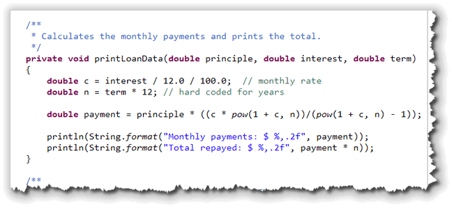
Pass By Value
When you call a method, the formal parameter receives a copy of the actual parameter. This is called pass by value. The actual parameters you use may be either literals or variables; in both cases a copy is made.
Suppose, for instance, inside your run() method
that you have two local variables, named
a and b, containing the values
52 and 17. Now, suppose that you
called myMethod() and passed as actual parameters,
the variables a, and b.
When you pass the variables a and b to
the method myMethod(), the values 52 and
17 are copied into the formal parameters j
and k, as shown here:

In the example shown here, the formal parameters j
and k are changed inside the method to 13
and 52. This has no effect at all on the variables
a and b.
Type Checking
When you call a method, the actual parameters you pass must be compatible with the types of the formal parameters. Java will attempt to ensure this using a process called type-checking.
Generally, what this means is that when a method is expecting a
String parameter, you can't pass an int,
and vice-versa. As you saw when we looked at Java's
primitive types, there are some numeric types that are compatible
with each other, and some that are not. For instance, if a method
is expecting a floating-point number, you can usually pass it an
int, but the reverse isn't true.
Type checking doesn't catch every error when you pass parameters to methods. If you write:
printLoanData(loanAmount, years, rate); // from line 26
the compiler will not catch your error. Because both
rate and years have the same type
(double), the compiler doesn't distinguish between them.
All it's doing is checking to see that you are passing the
right kind of value, not the right value.
Writing Functions
As you probably remember from Unit 2, many methods produce,
or return, a value instead of, or in addition to,
performing an action. For instance, the all of the
Math methods return information to
your program, rather than doing something to your
program, like the println() method does.
We call these kind of "value-producing" methods functions, and we call the "perform an action" methods procedures. The most important difference between these two kinds of methods is:
A procedure represents a series of statements
A function represents a value
Function Definitions
You've already learned how to use or call such value-producing methods, but how do you define them? Fortunately, it's not difficult. Functions vary in only two particulars from their action-oriented procedural cousins:
- functions have a return type other than
void. - functions must terminate by using a return expression
Here's the basic structure for defining a function looks like this:
public returnType methodName( parameters )
{
// statements
return typeExpr;
}
The monthlyPayment() Function
Your book discusses the return statement on page
97. I think that just looking at an example will probably help
as much as any explanation. To do that, let's rewrite our
example from earlier in this lesson as a function named
monthlyPayment().
To create the function, just follow these two steps:
-
Write the Heading:
You first have to decide what kind of
value the method will return, and what kind of parameters
it will need. Like the
printLoanData()procedure, themonthlyPayment()function will need three formal parameters. Unlike the procedure, though, the function will return adouble, instead of using the wordvoid. Here's the difference in the two headers:
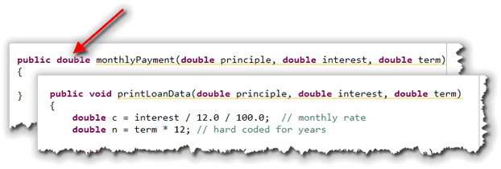
-
Return the Value:
Inside the method, perform any calculations that are needed to
determine "the answer", and then use a
returnexpression to end the method. FormonthlyPayment(), the code is exactly likeprintLoanData(), except that instead of printing the value, it is returned instead:
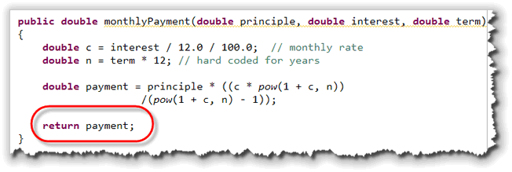
Alternative Return Syntax
Since we make no further use of the variable payment returned
from the monthlyPayment() function, it's common to
simply make the calculation part of the return expression and
shorted the method like this:
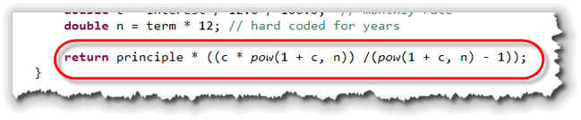
Return Caveats
There are two things you have to watch out for when using the
return statement.
- First, the expression that you return, must be the same type
(or convertable to that type) as the return type listed in the function
header. This, for instance, would be an error:
 because the method header says that it returns a
because the method header says that it returns a double, but the actual value returned is aString. - Second, a
returnstatement is a special flow of control that immediately ends the function. That means you can't have any other statements after areturnstatement. This, for instance produces an error:
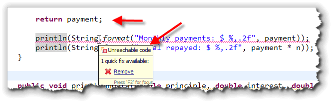
because theprintln()statement can never be reached; the function has already returned.
Actually, when we learn about the if statement
later this week, you'll see that a function can have several
return statements, as long as each and every path through
the code leads to exactly one return.
Calling the Function
To call the monthlyPayment() function, we have
four options:
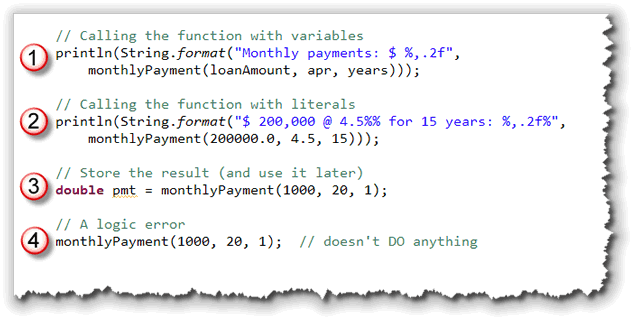
- You can pass variables to the function and then pass the
returned value to another procedure or function. In the example
shown here, I'm passing the returned value to the
String.format()function, and passing the value thatformat()returns to theprintln()procedure. - You can pass literals as the actual parameters when you call the function. The second example is almost identical to the first, except that literals are passed instead of variables.
- You can call the function and save the value you get back in a variable for later use.
- Finally, you can call the function just like you would call a procedure, that is, as a statement. While this is not a syntax error, it is always a logic error, since the code has no effect in your program.
Documenting Procedures and Functions
Whenever you write a procedure or function, you should provide documentation, so that those who call your method know what each formal parameter stands for, and what the returned value of any function represents.
To do this, you'll use Java documentation comments that begin
with the sequence /** (slash-star-star) and end with a
*/ (star-slash) just like a plain multi-line comment.
In between, you'll use special documentation tags that can
be interpreted by the Javadoc utility.
Appendix J in your textbook covers the syntax of these Javadoc tags.
Fortunately, you don't need to look them up, because Eclipse will
provide most of the structure for you. After you've written your
function (or procedure), just type a slash-star-star (/**)
immediately before the header, and Eclipse will fill in a skeleton
like this for you to modify:
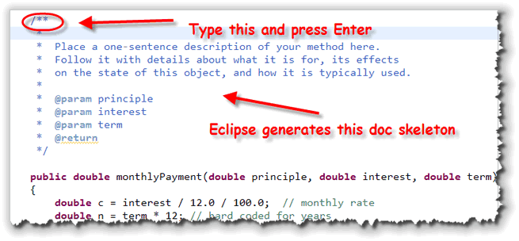
To finish the documentation just:- Provide a single sentence that describes what the function does. After this sentence (which must end in a period) you have supply more information on how the function or procedure would be used if you like.
- For every formal parameter, complete the
@paramtag which describes what the parameter represents. - Finally, after the @return tag (for a function), describe what the value returned by the function represents.
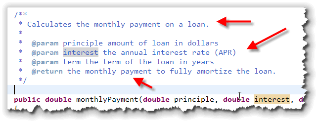
How Method Calls Work
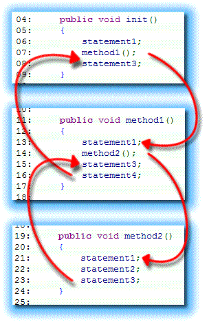
How do method calls work? When you call one method from another method, whether the method is a procedure or a function, the caller (the method making the call) saves the location of the line of code following the method call before tranferring control to the new method. In the new method, each statement is executed
in order until the method is finished (either by running out of
statements to execute, or by encountering the return
keyword). When the new method is finished, it returns control to the
statement following the original method call—the location
originally saved by the caller.
This is slightly complicated by the fact that the method you're calling may, itself, call other methods, which may also call other methods in turn. This chain of method calls is known as the "call stack", and is illustrated here.
In this example, when the init() method is called,
it first executes the line reading "statement 1" (06). Then, before
calling method1() on the next line, the program
saves the address of the following line—the line that
reads "statement 3" (08). This is called the return address.
After the return address is saved, the program jumps to
the first statement inside method1() and executes
it. Since the second statement inside method1() is
another method call, the program saves the address of the
following line (15) before calling it, just as it did inside the
init() method. This new return address is "stacked
on top of" the previously saved return address.
This continues on until method2() ends, and then
the address on the "top" of the stack is retrieved, and the
method "returns" to the statement it left.
Examining the Call Stack
Let's take a look at the call stack in real life
by creating an error inside one of the "bottom-level"
procedures in the Abacus program from last week.
In that program, recall, we had a printBeads()
procedure which was called by another procedure,
printTwoBeads().
To create an intentional runtime error, I've simply
defined a local int variable and initialized it with
the expression 1 / 0:
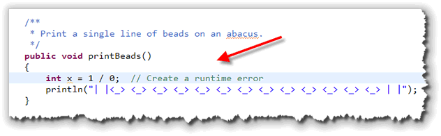
This is not illegal; that is, your code compiles without any problems at all. But, when yourun the program after adding this line, you'll see something that looks like this:
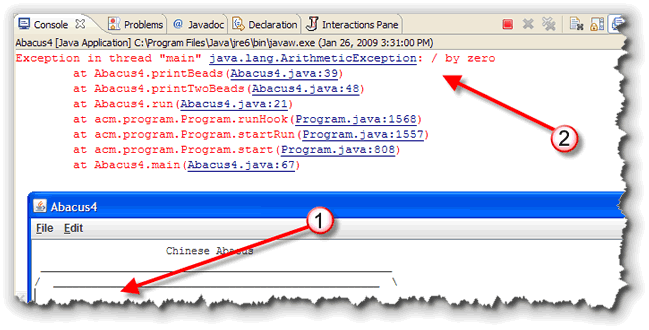
What Happened?
When you run the program it continues until the printBeads()
procedure is encountered. As you can see, the abacus heading is
printed in the ACM console program window at #1.
When printBeads() is executed, and it creates a
runtime error and the output in the ACM console program
window just stops. However, if you look in the Eclipse console window,
you'll see a stack trace as shown at #2. A stack trace is like
a snapshot of the call stack.
The top, or first line, of the stack trace shows you what error occured.
In this case, the error was a java.lang.ArithmeticException.
This occurs when you attempt an integer divide by zero. (As you gain
some experience with Java, you'll learn to interpret other, similar
runtime exception messages.)
Immediately below the error description is the
actual call-stack: the return addresses that were in memory at
the time the error occurred. As you can see, the error occurred
in a the printBeads() method on line 39. That method
was, in turn, called from the printTwoBeads() procedure
on line 48. That method was called from your run() method
on line 21.
Following that, you'll see several other entries, but notice that
these entries are not in code that you've written, but are
part of the ACM Class Libraries. Finally, at the very bottom, you'll
find a portion of your code again, the main() method in
your Abacus program.
Using the stack trace allows you to pinpoint the runtime errors that occur in your code. You can't, generally, locate code referred to in the ACM or Java class libraries, though, even though you have line numbers in the stack trace. This library code is supplied in object-code (binary) format, so you normally won't be able to read it. Most of the time, though, you'll just ignore these lines in the stack trace.
Coming Up Next ...
In this lesson you learned how to write user-defined methods that take parameters, and how to write methods that return values.
In the next lesson, you'll learn about Java's final primitive type,
boolean which represents the values true and
false, and which makes computer logic possible.